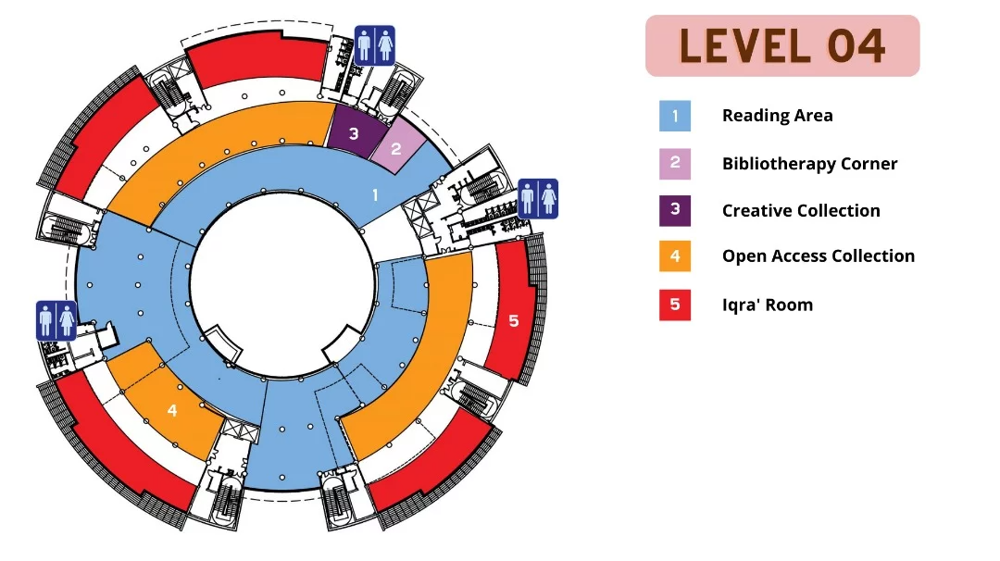

Universiti Tun Hussein Onn Malaysia
PTTA Library Space Booking System
Reserve rooms, learning spaces, and collaborative facilities at Tunku Tun Aminah Library online. Check availability, choose a time slot, and manage your bookings from one UTHM portal.
About PTTA
A dynamic knowledge gateway for the UTHM community
Tunku Tun Aminah Library supports teaching, learning, research, innovation, and student activities through accessible collections, technology-enabled rooms, quiet study areas, and collaborative spaces.
Teaching and Learning
Flexible rooms and reading environments support coursework, group discussion, presentations, and independent study.
Research and Knowledge
Reference collections, open access materials, scholar rooms, and information-searching facilities help users explore knowledge.
Student Community
Lounges, creative spaces, exhibitions, and extended-hour reading areas make PTTA an active part of campus life.
Floor Directory
Explore PTTA by Level
Use the official PTTA floor plans to find rooms, collections, services, and learning facilities before making a booking.

Level 1 Facilities
Visitor services, learning, and extended-hours spaces
Level 1 brings together the main visitor services, lounges, multimedia facilities, the 24 Hours Reading Room, and MakerSpace UTHM.
- Gallery
- Circulation Counter
- AATA Lounge
- Special User Area
- Closed Reference Room
- Multimedia Room
- International Office
- PPS Lounge
- Go Book Coffee Corner
- 24 Hours Reading Room
- MakerSpace UTHM
Facilities and Spaces
Spaces designed for different ways of learning
From focused reading to large academic events, PTTA provides facilities for individual, collaborative, creative, and technology-supported work.
Discussion Rooms
Hikmah Room, Lestari Room 1, Lestari Room 2, Al-Shirazi Scholar Room, and Iqra' Room.
Reading Areas
Quiet reading spaces across Levels 2, 3, and 4, including the 24 Hours Reading Room.
Auditorium
Al-Jazari Auditorium supports briefings, presentations, academic talks, and university events.
Multimedia Room
A technology-supported Level 1 space for multimedia learning and presentations.
MakerSpace
MakerSpace UTHM supports prototyping, practical projects, innovation, and collaborative making.
Open Access Collections
Open Access Collections on Levels 2, 3, and 4 provide convenient browsing and study access.
Creative Learning Spaces
Edu Entertainment, Eksplorasi Room, Sister Zone, and Bibliotherapy Corner support active learning.
Simple Booking
How Booking Works
The booking path is designed for quick decisions and clear confirmation.
- 01
Login using UTHM account
Access the portal with your registered university identity.
- 02
Select date and floor
Choose when you need the space and which PTTA level to explore.
- 03
View available spaces
Only rooms with at least one available time slot are displayed.
- 04
Choose available time slot
Open room details and select an available slot for the chosen date.
- 05
Confirm booking
Enter the participant count and confirm the selected reservation.
- 06
Manage from dashboard
Review upcoming reservations, history, edits, cancellations, and notices.
Featured Spaces
Popular PTTA rooms for study and collaboration
Explore frequently requested spaces and continue to their current availability.

Level 2
Hikmah Room
Enclosed collaborative room for meetings, discussions, and learning activities.
View space
Level 3
Al-Jazari Auditorium
Large presentation and event venue with stage, projection, audio, and fixed seating.
View spaceLevel 3
Lestari Room 1
Bookable discussion room for small-group learning, meetings, and presentations.
View spaceLevel 3
Lestari Room 2
A focused discussion room with display, whiteboard, and meeting table.
View spaceLevel 1
Multimedia Room
Technology-supported room for multimedia learning, group work, and presentations.
View space
Level 4
Iqra' Room
Bookable room for group reading, academic discussion, and collaborative activities.
View spaceLibrary Information
Plan your visit to PTTA
Service information for Tunku Tun Aminah Library at the UTHM Parit Raja campus.
Operating Hours
- Monday - Thursday8:00 AM - 9:30 PM
- Friday8:00 AM - 12:15 PM
2:45 PM - 9:30 PM - Weekend and public holidaysClosed
Contact Information
- Circulation Counter+607-4533318
- Reference Desk+607-4533319
- WhatsApp+607-4533318
PTTA Location
Tunku Tun Aminah Library
Universiti Tun Hussein Onn Malaysia
86400 Parit Raja, Batu Pahat
Johor, Malaysia